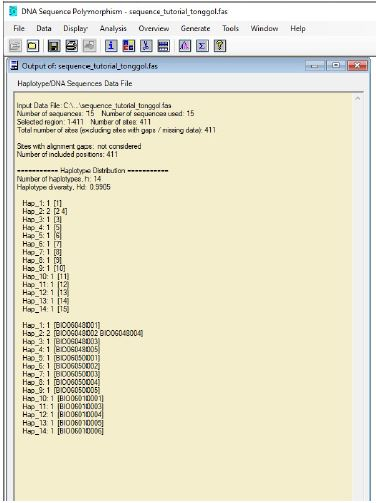
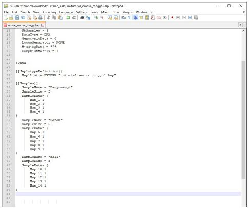
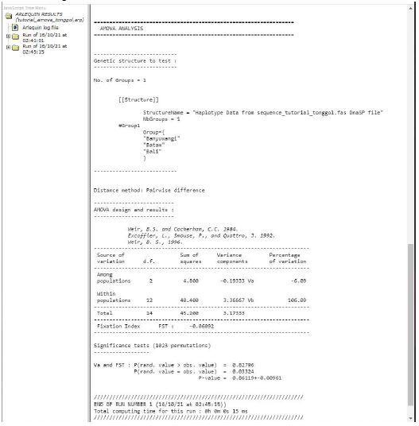

AMOVA
Panduan Analisis AMOVA (Analysis of Molecular Variances) menggunakan Arlequin
- Pada tutorial ini, data yang dipakai merupakan sebagian dari data sequence atau subset longtail tuna (Thunnus tonggol) dari hasil publikasi penelitian Astarini et al., (2021). Data yang digunakan sebanyak 15 sequence dari 3 lokasi yaitu Banyuwangi, Batam, dan Bali yang sudah berbentuk format fasta. Adapun rincian ID sampelnya sebagai berikut:
- Data Banyuwangi
- BIO06048001
- BIO06048002
- BIO06048003
- BIO06048004
BIO06048005
- Data Batam
- BIO06050001
- BIO06050002
- BIO06050003
- BIO06050004
BIO06050005
- Data Bali
- BIO06010001
- BIO06010002
- BIO06010003
- BIO06010004
BIO06010005
- Sebelum memulai analisis, software yang dibutuhkan yaitu DNAsp, [Arlequin [ver 3.5.2.2 dan Notepad++
- Setelah software yang diperlukan telah terdownload dan terinstal (software arlequin tidak perlu di install hanya perlu di download dan langsung jalankan tanpa proses install), selanjutnya yaitu ubah format fasta file menjadiarp file format melalui DnaSP, yaitu:
- Buka software DnaSP lalu klik file dan pilih open data file
- Pilih data fasta, pada tutorial ini data tersimpan dengan nama “sequence_tutorial_tonggol” lalu klik Open, setelah itu akan muncul informasi dari fasta file yang kita memiliki, setelah muncul informasi fasta file klik Close
- Selanjutnya, 15 data sequence yang terdapat pada fasta file dikelompokkan menjadi 3 populasi dengan cara klik Data dan pilih Define Sequence Sets.
- Masukkan ID sequence berdasarkan populasi yang sama dari kolom List of All Sequences ke Included Lists , dengan cara blok ID sampel berdasarkan populasi yang sama lalu klik icon >> (Include sequence/s)

- Setelah ID sampel berdasarkan populasi yang sama, dengan Langkah pertama yaitu 5 ID sampel dari Batam (BIO0605001 ??? BIO0605005), lalu klik Add new Sequence Set dan set nama populasi seperti “Banyuwangi”

- Lakukan hal serupa untuk kedua populasi lainnya yaitu Batam dan Bali
- Setelah ID sampel sudah terbentuk 3 populasi, selanjutnya klik Update all entries
- Klik File , pilih Save/Export Data As???. lalu pilih Arlequin File Format
- Setting default pada jendela Haplotype/DNA Sequences Data File. Options, lalu klik OK
- Simpan .hap format berdasarkan nama file yang diinginkan, pada tutorial ini .hap file format di simpan dengan nama "tutorial_amova_tonggol.hap", lalu klik Save
- Lalu simpan .arp file format dengan nama yang diinginkan, pada tutorial ini .arp file format di simpan dengan nama “tutorial_amova_tonggol.arp” , dan klik Save
- Lalu akan muncul informasi Haplotype distribution dari masing-masing ID, lalu pilih close dan keluar dari DNAsp software

- Setelah sudah menyimpan file .arp format untuk analisis AMOVA dengan menggunakan Arlequin, file .arp tersebut kita buka dan edit menggunakan Notepad++
Buka file .arp format yang telah disimpan melalui software DNAsp, dengan menggunakan Notepad++
Tambahkan kode seperti ini agar data file tersebut dapat terbaca di software Arlequin dan bisa terbaca sebagai kelompok populasi.
Sebelum:

1. Setelah mengedit format .arp file, kita akan mulai menjalankan file tersebut di Arlequin
- Buka software arlequin dengan “Run as administrator” untuk yang menjalankan dengan windows
- Pilih menu “Open project”
- Open file .arp format yang sudah di simpan melalui software DnaSP dan diedit melalui Notepad++. Pada tutorial ini file yang tersimpan dengan nama “tutorial_amova_tonggol.arp”, lalu klik Open
- Akan muncul sampel group berdasarkan populasi yang telah di masukkan yaitu tiga populasi (Banyuwangi, Batam, dan Bali)
- Pilih menu Setting dan Pilih point AMOVA, atur dengan mencentang bagian “Standard AMOVA computation (haplotypic format)” dan gunakan pengaturan seperti ini
Note: silakan bisa gunakan fitur analisis sebagai kebutuhan riset anda,karena tutorial ini hanya bertujuan untuk mendapatkan nilai AMOVA dari data sequence
- Sebelum menjalankan analisis, pilih opsi menu Option dan centang bagian “Append results” dan “Use associated settings” , untuk lainnya bisa di abaikan atau tidak di centang
- Klik Start
- Hasil akanterlihat pada web-browser default komputeratau laptop, pada tutorial initerbuka pada Chrome

Referensi:
Astarini, I. A., Ningsih, E. Y., Simanungkalit, D., Ardiana, S. A., Al Malik, M. D., Yusmalinda, N. L. A., Sembiring, A., … & Collins, A. (2021). Genetic variation of longtail tuna Thunnus tonggol landed in four fish markets in Indonesia based on mitochondrial DNA.
Excoffier, L., &Lischer, H. E. (2010). Arlequin suite ver 3.5: a new series of programs to perform population genetics analyses under Linux and Windows. Molecular ecology resources, 10(3), 564-567.
Rozas, J., Ferrer-Mata, A., S??nchez-DelBarrio, J. C., Guirao-Rico, S., Librado, P., Ramos-Onsins, S. E., & S??nchez-Gracia, A. (2017). DnaSP 6: DNA sequence polymorphism analysis of large data sets. Molecular biology and evolution, 34(12), 3299-3302.
Penyusun: Muhammad Danie Al Malik &Yuliana Fitri Syamsuni